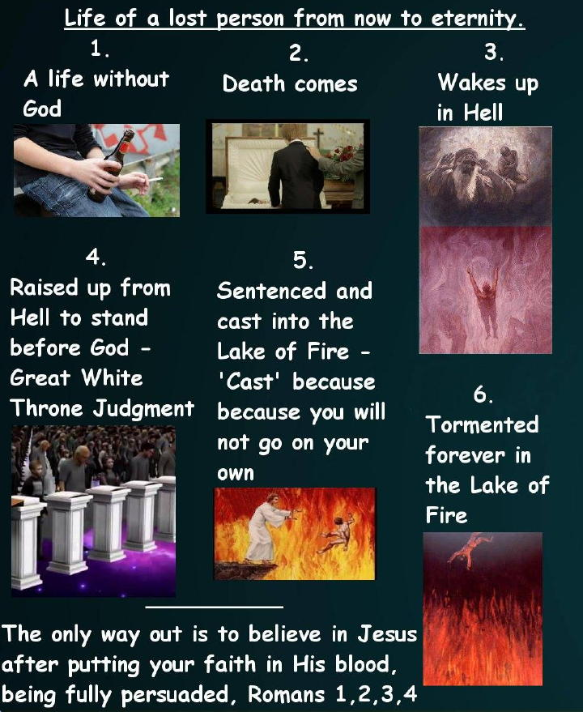

Studies
5.5% of the Bible is for us today found in the books of the Bible, Romans thru Philemon.
We today are also saved by grace thru faith...however, today, our works play no part in our salvation, whatsoever! (and within these books, Romans thru Philemon, 30% is the Apostle Paul dealing with his kinsmen the Jews).
Are you confused yet? Well, this why God tells us to "study", II Timothy 2:15 (KJB).
Almost all of Christianity has mixed God's doctrine for Israel, with doctrine that is for us today, to a point where most of today's Christianity is nothing more than a "made up" Christianity, which saves no one!
"Universalism" by so called preacher Rodney Beaulieu who is an Acts 28er, has entered our Mid Acts Paul-Line Dispensational Right Divider Grace Camp - unbelievable!
I am Mid Acts, Pauline, Dispensational, Right Division, in my doctrinal KJB beliefs.
So exactly what does all this mean?
If your one of the few who sit in denominational churches, watch so called christian TV, and follow christian teachings on You Tube and Facebook, and have that feeling that something is wrong here, then the following mesage is for you...
Click for audio message: No More Lies!
(Message by Bobby Faulkner)
The Apostle Paul's declaration of the gospel, 1 Corinthians 15:1-4 (KJB), and also, in whom you trust, Ephesians 1:12,13 (KJB), after believing Christ's death, burial, and resurrection, for payment of all your sins.
The King James Bible - Pure Cambridge Edition - is "all authority".
There are those who call God's word in the KJB, "final authority".
But, "final authority" means then, that there are other authorities leading up to it, which there is not!
A Message on Hell - The Forgotten Place
Hell - Luke 16:19-31
The life of a lost person, without Christ.

The final destination of a lost person, without Christ - The Lake of Fire
Salvation From Hell
God's Gospel Tract - Romans Chapters 1 thru 4
Why you need to learn to "rightly divide the word of truth" 2 Timothy 2:15
(learning to put bible truths into their proper time slots)
The god of this world - Part 1,2,3
__________
__________
Ultra Dispensationalist - Part 1,2,3,4,5,6,7
__________
__________
__________
__________
__________
__________